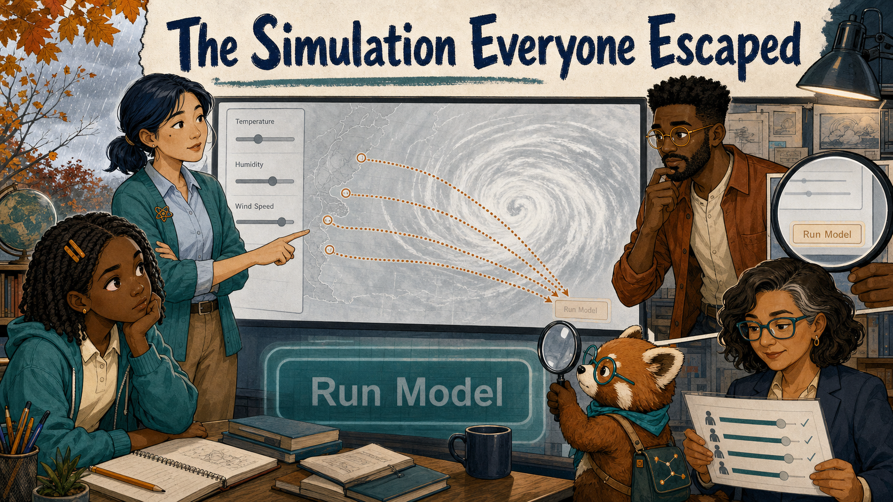
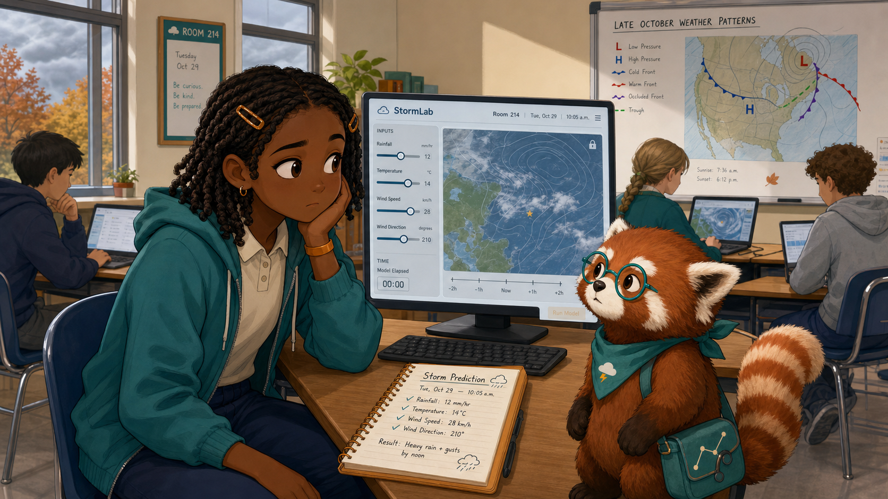
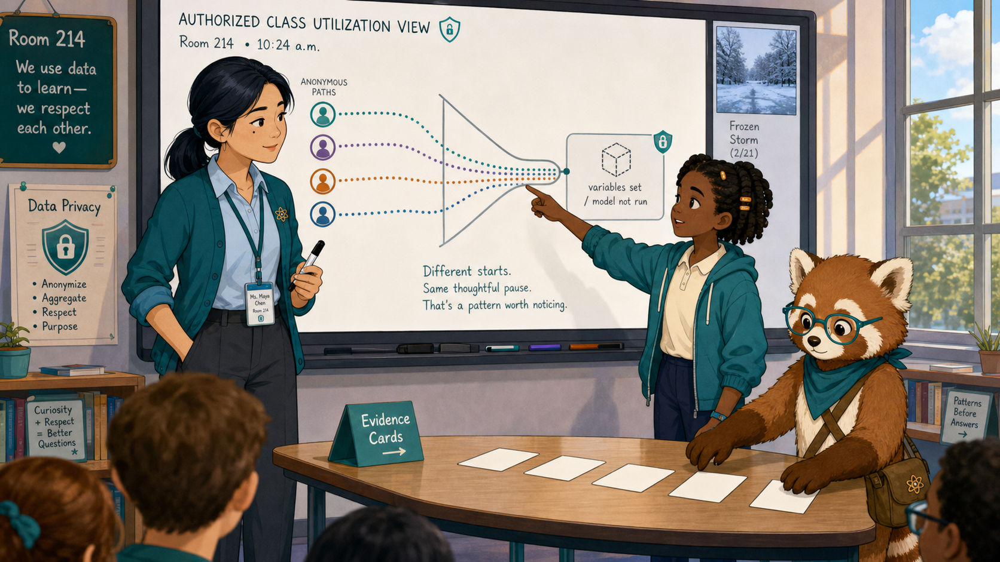
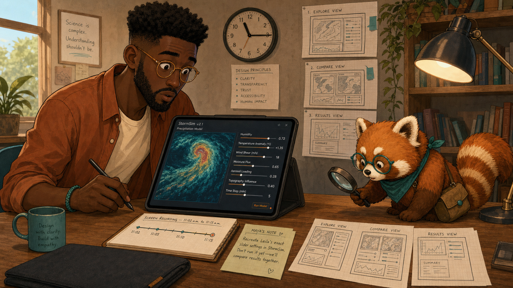
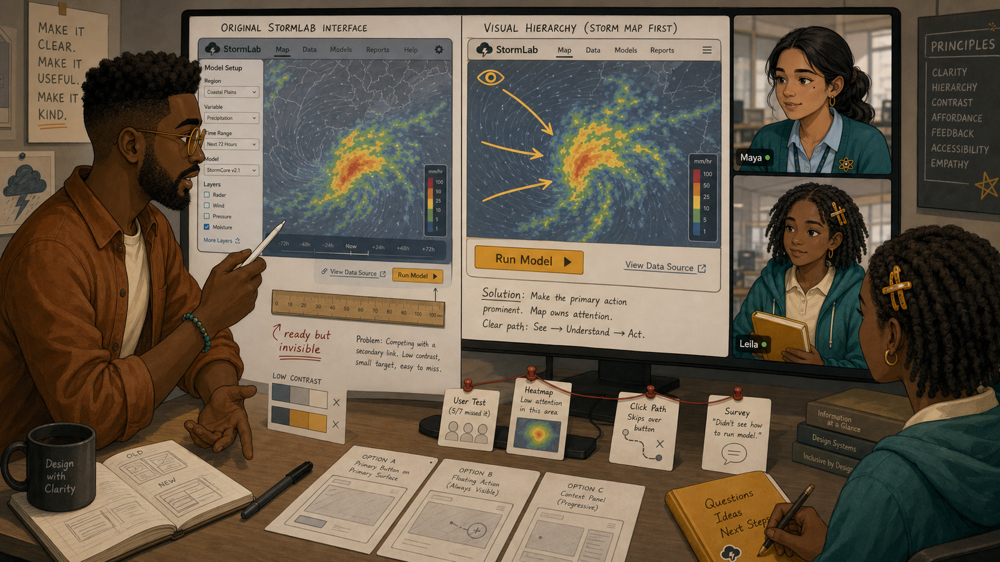
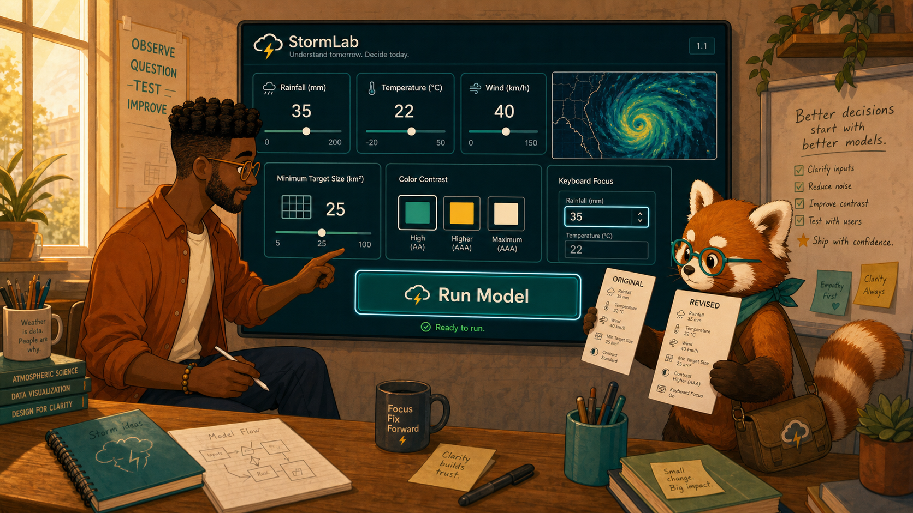
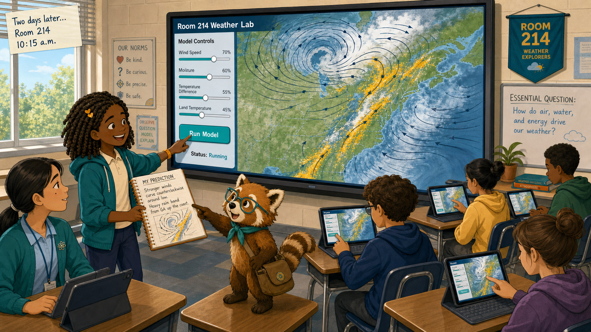
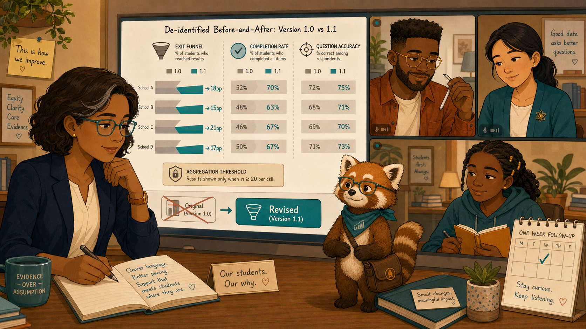

The Simulation Everyone Escaped¶

Cover Image Prompt
(This is the Cover Image. Do not include this label in the image.) Create a wide-landscape 16:9 graphic-novel cover in a warm contemporary educational-comic style with clean ink contours, softly painted color, gentle paper texture, realistic proportions, and no brands. In Cedar Grove Middle School Room 214 on a cool Tuesday morning in late October, show Leila Brooks, a 13-year-old Black American girl with rich dark-brown skin, heart-shaped face, large dark-brown eyes, shoulder-length center-parted two-strand twists held by symmetrical amber barrettes, teal zip hoodie over a cream polo, navy trousers, cinnamon high-tops, and amber left-wrist band, staring past a tiny low-contrast amber button at the lower-right edge of a pale-gray climate simulation. Ms. Maya Chen, a 35-year-old Chinese American woman with light warm-beige skin, left-eye beauty mark, blue-black low ponytail, rolled-sleeve teal cardigan, pale-blue shirt, charcoal trousers, white sneakers, amber atom pin, and teal lanyard, notices four matching exit markers on a class pattern display. Noah Okafor, a tall lean 31-year-old Nigerian American man with deep umber-brown skin, flat-topped coils, close beard, round amber glasses, cinnamon overshirt, cream shirt, teal bracelet, and left-hand stylus, magnifies the hidden control on a studio inset. Dr. Elena Ruiz, a 47-year-old Mexican American woman with warm medium-brown skin, rectangular teal glasses, wavy espresso bob with one right-temple silver streak, navy blazer, and cream blouse, views an anonymous district completion chart. Rowan, a small rounded cinnamon-and-cream red panda with round teal glasses, teal neckerchief, ringed tail, and connected-dots satchel, holds a magnifying glass over the control without clicking it. Include a stylized storm map, temperature slider, four dotted exit trails, a large revised teal button ghosted in the background, and the exact title “The Simulation Everyone Escaped” in bold navy comic lettering. Palette: cool gray, navy, teal, cream, cinnamon, and amber. Tone: playful interface mystery and humane problem-solving, never blaming learners. Generate the image immediately without asking clarifying questions.Narrative Prompt
This fictional seven-panel story follows the same cast and occurs a few weeks after “The Red Node Before Monday.” It distinguishes subject difficulty from interface friction. Use the exact recurring character anchors and the same Room 214, but introduce the fictional StormLab Climate Model: a pale-gray interface with variables on the left, a storm map in the center, and initially a tiny amber Run Model control low on the right. The revision changes only the control hierarchy. Keep evidence de-identified outside Maya's roster-authorized view and preserve learner agency.Prologue – The Exit That Looked Like Confusion¶
The new climate MicroSim promised students a storm they could steer. Instead, the class kept leaving from the same quiet screen. An exit record could mean boredom, confusion, interruption, or a dozen other things. To learn which, the team needed the pattern—and the people who had experienced it.
Panel 1: The Motionless Storm¶

Image Prompt
(This is Panel 01. Do not include the panel number in the image.) Generate a wide-landscape 16:9 image in the warm contemporary educational-comic style, depicting panel 1 of 7 in Room 214 at 10:05 a.m. on a late-October Tuesday. Show Leila Brooks with rich dark-brown skin, heart-shaped face, large dark-brown eyes, shoulder-length center-parted twists held by two amber barrettes, teal hoodie over a cream polo, navy trousers, cinnamon high-tops, and amber left-wrist band. She has correctly set rainfall, temperature, and wind sliders on a pale-gray fictional StormLab interface, but the central storm map remains frozen. A tiny low-contrast amber Run Model control sits at the far lower-right edge, partly lost beside a pale border. Rowan, the desk-high cinnamon-and-cream red panda with round teal glasses, teal neckerchief, ringed tail, and connected-dots satchel, studies Leila's gaze rather than pointing out the answer. Include Leila's amber notebook with a correct prediction, a wall weather chart, four classmates working, cool window light, a small elapsed-time indicator, and no error message. Emotional tone: puzzled waiting, not academic defeat. Generate the image immediately without asking clarifying questions.Leila Brooks is a 13-year-old seventh-grade science student at Cedar Grove Middle School. Leila set every variable and waited. Nothing moved. She reread the instructions, checked her prediction, and finally returned to the chapter. The record captured an exit, but it did not capture the sentence in her head: I cannot make it begin.
Panel 2: Four Trails to One Screen¶

Image Prompt
(This is Panel 02. Do not include the panel number in the image.) Generate a wide-landscape 16:9 image in the same warm educational-comic style, depicting panel 2 of 7 in Room 214 at 10:24 a.m. Show Ms. Maya Chen with light warm-beige skin, softly square face, left-eye beauty mark, low center-parted blue-black ponytail, rolled-sleeve deep-teal cardigan, pale-blue shirt, charcoal trousers, white sneakers, amber atom pin, and dark-teal lanyard. Maya examines an authorized class utilization view with four anonymous dotted paths ending at the same “variables set / model not run” state. Leila, unchanged in her twists, amber barrettes, teal hoodie, cream polo, navy trousers, and wristband, stands beside Maya and points to the screen she left. Rowan, in cinnamon-and-cream fur, teal glasses and neckerchief, ringed tail, and satchel, places four blank evidence cards in a row. Include a funnel that narrows at one state, blurred student rows, a privacy shield, Maya's black marker, the frozen storm thumbnail, cool daylight, and no score comparison. Tone: pattern recognition paired with respectful listening. Generate the image immediately without asking clarifying questions.Ms. Maya Chen teaches Leila's seventh-grade science class. Maya saw four paths end after students set the variables but before the model ran. “Did the science stop making sense?” she asked. Leila shook her head. “My prediction made sense. I just thought the simulation was broken.”
Panel 3: Reproduce Before Redesign¶

Image Prompt
(This is Panel 03. Do not include the panel number in the image.) Generate a wide-landscape 16:9 image in the same warm educational-comic style, depicting panel 3 of 7 in Noah's small design studio at 11:15 a.m. Show Noah Okafor, tall and lean with deep umber-brown skin, long oval face, broad nose, high forehead, dark-brown eyes behind round translucent amber glasses, close beard, flat-topped black coils with faded sides, open cinnamon overshirt, cream shirt, indigo trousers, teal shoes, teal right-wrist bracelet, and a black stylus in his left hand. He recreates Leila's exact slider settings on a tablet and pauses with his gaze centered on the storm map, missing the tiny amber Run Model control at the lower-right edge. Rowan, the small rounded cinnamon-and-cream red panda with teal glasses, teal neckerchief, ringed tail, and satchel, holds a magnifying glass near—but not over—the button. Include a screen-recording timeline, Maya's de-identified note, three paper interface sketches, a wall clock, a warm desk lamp, a charcoal laptop sleeve, and no logos. Tone: surprised humility as the designer encounters his own blind spot. Generate the image immediately without asking clarifying questions.Noah Okafor designs the class's interactive intelligent textbook and its MicroSims. Noah replayed the same path without reading Maya's conclusion first. He set the variables, watched the center of the screen—and waited. Only when he traced every edge did he notice the tiny control. “The model is ready,” he said. “The interface never makes that readiness visible.”
Panel 4: The Smallest Thing on the Screen¶

Image Prompt
(This is Panel 04. Do not include the panel number in the image.) Generate a wide-landscape 16:9 image in the same warm educational-comic style, depicting panel 4 of 7 as a close design-review scene in Noah's studio at noon. Noah retains his deep umber-brown skin, flat-topped coils, close beard, round amber glasses, cream shirt, cinnamon overshirt, indigo trousers, teal bracelet, and left-hand stylus. A large split display shows the original fictional StormLab interface on the left with the tiny amber Run Model control crowded beside a secondary link, and an annotated visual hierarchy on the right showing the storm map dominating attention. Maya appears on a video tile with her low ponytail, left-eye beauty mark, teal cardigan, pale-blue shirt, amber atom pin, and lanyard; Leila appears on a second tile with her twists, amber barrettes, teal hoodie, cream polo, and amber notebook. Include gaze arrows toward the storm map, a ruler marking the small target, low contrast swatches, a note reading “ready but invisible,” Rowan connecting evidence cards, paper prototypes, and neutral studio light. Tone: precise diagnosis without blaming the user. Generate the image immediately without asking clarifying questions.The action that mattered most was the smallest, faintest target on the screen. Its position made it look secondary, and its color barely separated it from the panel. The exits had not measured climate understanding. They had measured whether students could discover an interface secret.
Panel 5: Make the Next Action Obvious¶

Image Prompt
(This is Panel 05. Do not include the panel number in the image.) Generate a wide-landscape 16:9 image in the same warm educational-comic style, depicting panel 5 of 7 in Noah's studio that afternoon. Noah retains his exact flat-topped coils, close beard, round amber glasses, open cinnamon overshirt, cream shirt, indigo trousers, teal shoes, right-wrist bracelet, and left-hand stylus. He tests a revised StormLab interface with one large high-contrast deep-teal Run Model control centered directly below the rainfall, temperature, and wind variables; a clear focus outline and short status line read “Ready to run.” Rowan, the cinnamon-and-cream red panda with teal glasses, teal neckerchief, ringed tail, and satchel, compares an original paper card to the revised one. Include a minimum-target-size grid, three color contrast swatches, keyboard focus indicator, unchanged storm map, unchanged science variables, a small version tag “1.1,” and afternoon amber light. Tone: clarity, restraint, and confidence in a focused fix. No real brands. Generate the image immediately without asking clarifying questions.Noah kept the science exactly the same. He moved one action into the visual path, increased its size and contrast, added a focus outline, and made the ready state explicit. The revision was not more entertaining. It was more legible.
Panel 6: The Storm Finally Moves¶

Image Prompt
(This is Panel 06. Do not include the panel number in the image.) Generate a wide-landscape 16:9 image in the same warm educational-comic style, depicting panel 6 of 7 in Room 214 two days later at 10:15 a.m. Leila retains her rich dark-brown skin, heart-shaped face, shoulder-length twists, paired amber barrettes, teal hoodie, cream polo, navy trousers, cinnamon high-tops, amber wristband, and amber notebook. She presses the large centered teal Run Model control, and the storm map visibly animates with curved navy wind lines and amber rain bands matching her prediction. Maya retains her low ponytail, left-eye beauty mark, teal rolled-sleeve cardigan, pale-blue shirt, atom pin, charcoal trousers, white sneakers, and lanyard, watching from student eye level. Four recurring classmates run their models independently. Rowan stands desk-high with cinnamon-and-cream fur, teal glasses and neckerchief, ringed tail, and satchel, pointing from Leila's notebook prediction to the moving map. Include the exact unchanged sliders, a clear Ready status becoming Running, delighted but natural expressions, cool daylight, and no confetti or reward badges. Tone: the interface recedes and the science takes center stage. Generate the image immediately without asking clarifying questions.The next class did not need an announcement about the new button. Leila set the same variables, found the action immediately, and watched the storm follow the path she had predicted. This time, the record of completion matched what she actually understood.
Panel 7: Better Use, Protected Learners¶

Image Prompt
(This is Panel 07. Do not include the panel number in the image.) Generate a wide-landscape 16:9 image in the same warm educational-comic style, depicting panel 7 of 7 in Elena's district review room the following week. Dr. Elena Ruiz appears with warm medium-brown skin, oval high-cheekboned face, thin rectangular teal glasses, wavy espresso-brown bob with one narrow silver streak at her right temple, navy blazer, cream blouse, charcoal trousers, gold studs, and amber left-wrist watch. She studies a de-identified before-and-after chart: the exit funnel widens after version 1.1, completion rises across four schools, and question accuracy remains visible as a separate measure. Noah appears on a tile with flat-topped coils, close beard, round amber glasses, cinnamon overshirt, cream shirt, and left-hand stylus; Maya appears with low ponytail, teal cardigan, and amber atom pin; Leila appears with twists, amber barrettes, teal hoodie, and amber notebook. Rowan stands between the four views with cinnamon-and-cream fur, teal glasses and neckerchief, ringed tail, and satchel. Include an aggregation-threshold badge, no names, a tiny original-button icon crossed out, the large revised teal control, a calendar for one-week follow-up, and restrained satisfied expressions. Tone: evidence-based relief, not triumphalism. Generate the image immediately without asking clarifying questions.Dr. Elena Ruiz is the district learning director, responsible for using de-identified evidence to improve learning across schools. Elena confirmed that completion rose across schools after version 1.1, using only groups large enough to protect individual students. Accuracy remained a separate question; a usable interface did not guarantee learning. But the team had removed a barrier, and now the learning evidence meant what they had thought it meant.
Epilogue – Sometimes the Button Is the Problem¶
Repeated exits revealed where to investigate, not why students left. Maya paired the pattern with Leila's account; Noah reproduced the experience before changing it; Elena confirmed the result without exposing individuals. The repair succeeded because the team changed one interface variable and kept the science stable.
| Challenge | How the Team Responded | Lesson for Today |
|---|---|---|
| Exits looked like content confusion | Maya asked learners what happened at that screen | Interaction records need human context |
| The designer could not see the problem | Noah reproduced the learner's path | Test the actual sequence, not your memory of it |
| A critical control was visually secondary | Noah fixed size, contrast, placement, and focus | Important actions need an obvious hierarchy |
| Completion improved | Elena kept accuracy as a separate measure | Usability and learning are related but not identical |
Call to Action¶
When learners repeatedly stop at the same place, inspect the environment before you judge their effort or understanding. A trustworthy record can reveal friction—but only careful observation can tell you what kind.
“I understood the storm. I couldn't find the beginning.”
—Leila Brooks, fictional student
“Reproduce the path before you redesign it.”
—Noah Okafor, fictional designer
“Sometimes the learner is not broken—the button is.”
—Ms. Maya Chen, fictional teacher
References¶
- Wikipedia: Usability - Overview of effectiveness, efficiency, and satisfaction in interface use
- Wikipedia: Human–computer interaction - Background on designing and evaluating interactive systems
- Wikipedia: User experience - Introduction to a person's experience of using a product or system
- W3C: Web Content Accessibility Guidelines overview - International guidance for making web content more accessible
- Nielsen Norman Group: Ten Usability Heuristics - Widely used principles for visibility, control, consistency, and error prevention